NOVETATS
Cau la xarxa criminal
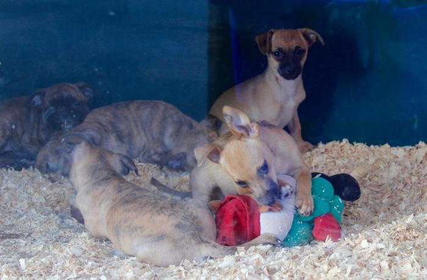Victoria! Cau la xarxa criminal que portem denunciant des del 2013
Avanços importants
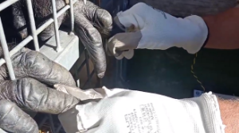Avenços tècnics que canvien vides
Reunió anual
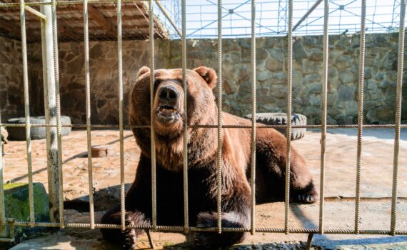S’ha celebrat la reunió anual de EARS, associació europea de centres de rescate d’animals
"Nit del recompte"
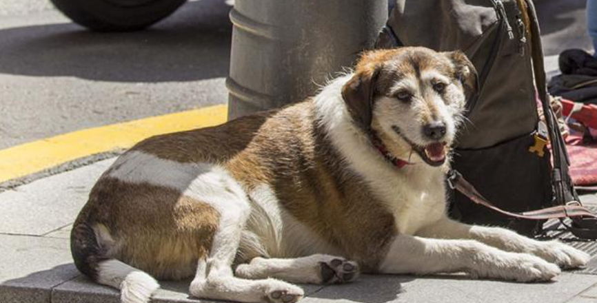La Xapsll (Xarxa d'Atenció a Persones Sense Llar) organiza la “Nit del Recompte” el próximo martes 30 de mayo.
Linito, 36 anys
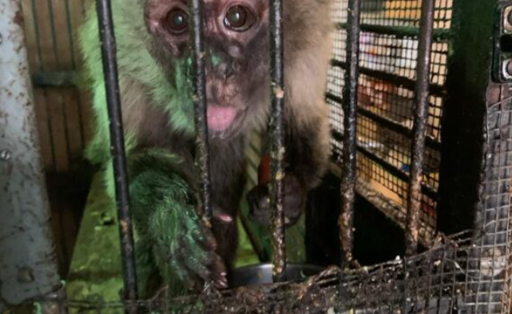Linito, un mico caputxí de 36 anys, nou inquilí de la Fundació MONA
Immunogestió del Senglar
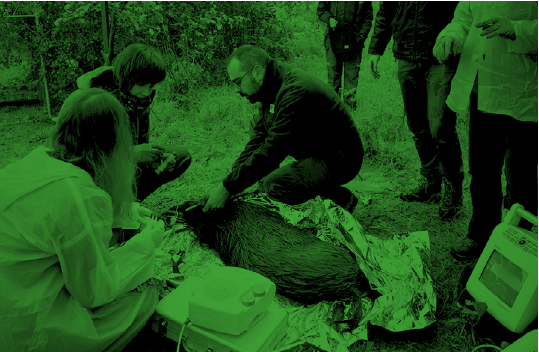La inmunicontracepción como método de gestión del jabalí.
Máster i Postgrau en primatologia
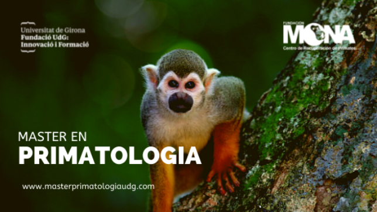Màster i Postgrau en Primatologia, 10ª edició
Assistència veterinaria gratuïta
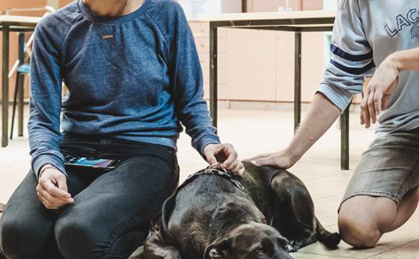S'ofereix assistència veterinària gratuïta als animals de les famílies vulnerables d'arreu d'Espanya.
Reubicada una gata tancada durant 10 anys
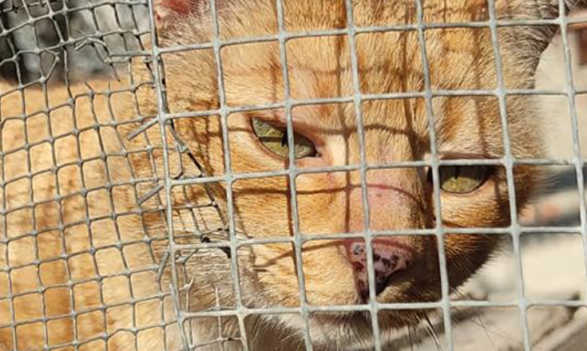Es consegueix la reubicació d'una gata que havia estat tancada en una gàbia durant 10 anys.
¡Califòrnia ja és lliure de gàbies!
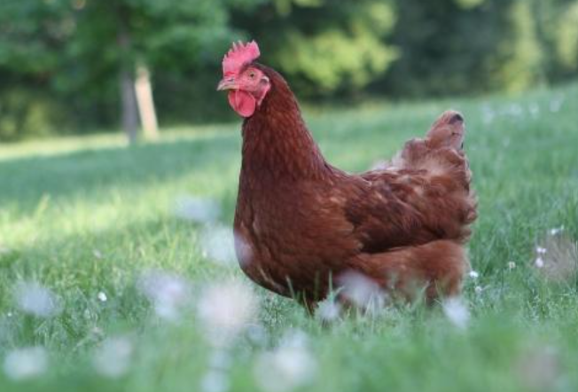La prohibición s'aplica a tots els productes, incloses les importacions, establint un precedent que hauria de desbravar el camí per a la UE.
"Com (i amb què) somien els gossos?"
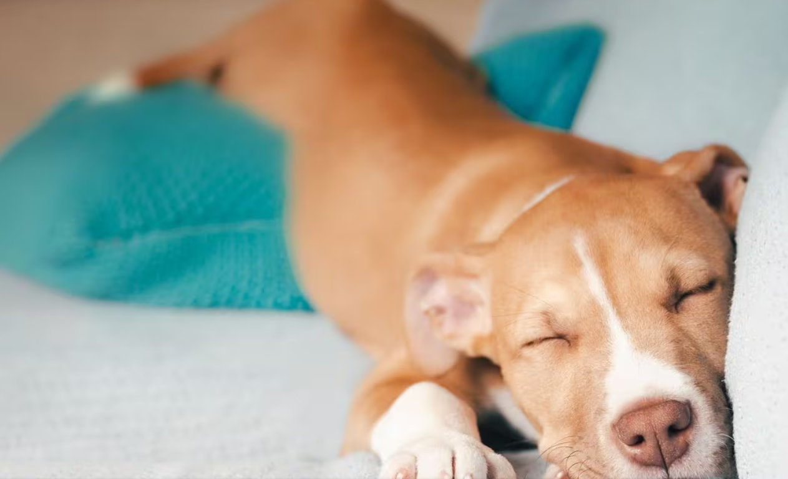Els gossos somien i ho fan de manera similar a les persones
El soroll dels vaixells, perillos
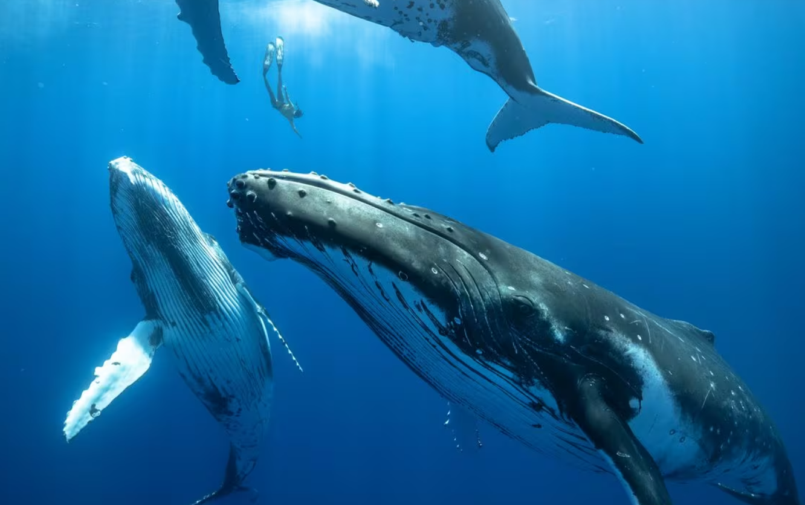El cant de les balenes no pot competir amb el soroll dels vaixells